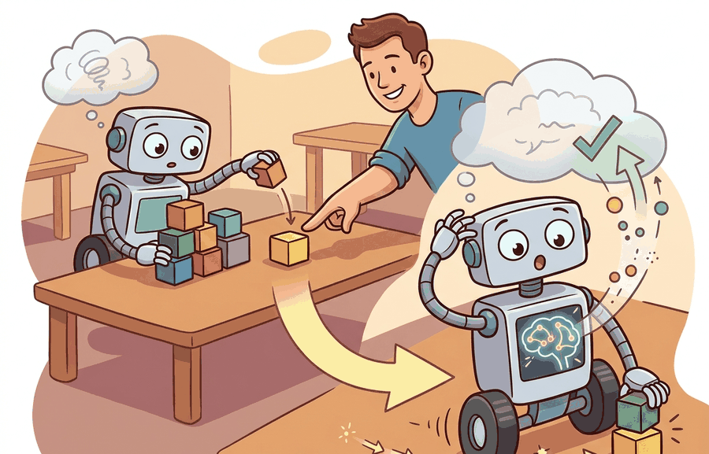

"The human said no, which was the cleanest label I received all week."
A Correction Log With Standards

Online adaptation; human correction as data should turn interventions into typed supervision, not informal anecdotes.
Human correction is valuable because it couples action failure to targeted supervision. The gain is lost when corrections are stored as undifferentiated logs without semantics about what the human actually meant.
Theory
Human correction is not one thing. It can be a demonstration, preference signal, reset, rejection, relabel, or emergency stop. A useful correction record is
$$c_t=(o_t,a_t,\tilde a_t,\kappa_t,\nu_t),$$
where $\tilde a_t$ is the corrected action, $\kappa_t$ is correction type, and $\nu_t$ is provenance metadata such as operator identity, delay, and confidence.
| Correction Type | Meaning | Best Downstream Use |
|---|---|---|
| demonstration | human supplies an alternate trajectory | behavior cloning or imitation update |
| preference | human ranks one behavior over another | reward or policy preference learning |
| relabel | human fixes state or object annotation | perception or estimator retraining |
| safety stop | human vetoes an action immediately | safety filter and hazard audit |
Worked Example
A teleoperated correction during a failed grasp should not be merged blindly with a verbal preference or a safety stop. Those signals carry different supervision semantics.
def validate_correction(payload: dict[str, object]) -> dict[str, object]:
assert payload, "payload must not be empty"
return payload
correction = {
"type": "demonstration",
"context": "misaligned grasp on reflective carton",
"corrected_action": "lower wrist, re-center, close gripper later",
"used_for": "behavior cloning update candidate",
}
print(validate_correction(correction)){'type': 'demonstration', 'context': 'misaligned grasp on reflective carton', 'corrected_action': 'lower wrist, re-center, close gripper later', 'used_for': 'behavior cloning update candidate'}The expected output is useful because it preserves the correction type. A demonstration can train a policy directly, while a safety stop may only label a hazard and should not be interpreted as an alternative action trajectory.
- Capture the intervention with state, action, and task context.
- Label the correction type explicitly.
- Route each correction type to the appropriate learner, filter, or audit queue.
- Replay the corrected case before promotion.
- Measure whether the update improves similar failures without creating new ones.
Teleoperation logs, preference-label pipelines, dataset cards, and replay harnesses are the right tools here because they preserve provenance. The shortcut is worthwhile only if the correction schema keeps type, context, and target use explicit.
Untyped correction logs create supervision ambiguity. A stop command, preference cue, and teleoperated trajectory should not be treated as interchangeable labels.
A manipulator operator may sometimes provide a full corrective trajectory, sometimes just veto a dangerous action, and sometimes relabel object identity after a perception mistake. Those three corrections should route to behavior cloning, safety filtering, and perception retraining respectively.
Open questions include how to price operator attention, how to choose which failures deserve human correction first, and how to combine typed correction signals without overwhelming the learner with inconsistent supervision.
Can you list three correction types and explain how each should influence a later update? If not, the correction pipeline is still too coarse to support reliable adaptation.
Correction value also depends on delay and context. A perfect corrective trajectory recorded after several hidden compensations may be less informative than a prompt intervention at the exact decision boundary that mattered.
For that reason, strong embodied correction datasets usually log synchronized video or sensor replay, robot state, commanded action, operator latency, interface modality, and post hoc outcome tags. ROS bag capture, teleoperation dashboards, preference-label queues, and dataset-card tooling are practical because they let teams recover exactly what the human observed and which learner should consume the signal. Without that routing discipline, human correction becomes expensive anecdote instead of reusable supervision.
One concrete stack is to capture raw interaction in ROS 2, align the corrected snippets with PyTorch training examples, and track downstream update quality in Weights and Biases or TensorBoard. That stack matters because the same intervention may feed imitation learning, preference modeling, or safety monitoring depending on the correction type. The artifact boundary should therefore be the typed correction record plus replayable context, not just a loose folder of operator notes.
Another important distinction is between corrective data collected for local repair and corrective data collected for generalization. If an operator rescues one failed grasp, the immediate goal may be a narrow patch for that shelf geometry or object pose. If the same failure pattern repeats across many shifts, the useful artifact becomes a curated correction set with clear inclusion rules, operator-agreement checks, and slice labels that let the team test whether the update transfers beyond the original incident. That is why the correction ledger should preserve task family, embodiment, and failure taxonomy rather than only the final corrected action.
Human correction becomes high-quality training signal only when its type, context, and intended use are logged precisely.
Define a schema for human corrections to a drone landing policy. Include at least three correction types and state how each one should be used in a later update.
Section References
Kirkpatrick, J. et al. Overcoming catastrophic forgetting in neural networks. PNAS, 2017.
Use for regularization-based retention and its assumptions.
Lopez-Paz, D. and Ranzato, M. Gradient Episodic Memory for Continual Learning. NeurIPS, 2017.
Use for replay-constrained updates and task-stream evaluation.
What's Next?
Next, continue with Section 57.4, where continual learning is gated by safety and evaluated over time.